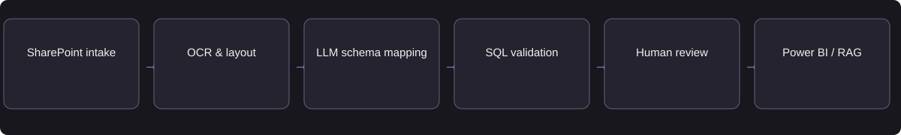

Extract. Map. Analyse.
Turn document-bound SLA information into validated KPI data and Power BI dashboards for business reporting.
PROFESSIONAL EXPERIENCE · ENTERPRISE AI
An enterprise AI solution that extracts and maps KPIs from SLA documents, powers Power BI dashboards, and enables users to ask questions about SLA information through a conversational RAG assistant.
Turn document-bound SLA information into validated KPI data and Power BI dashboards for business reporting.
Add a RAG assistant so users can find and interpret relevant SLA content through natural-language questions.
Dashboards support KPI performance analysis. The assistant retrieves and explains SLA knowledge. A contractual target is not a live operational measurement.
Professional experience at Value Groups. The title is descriptive. The two capabilities reflect the professional project; the diagrams, PRD, backlog, synthetic examples, and evaluation plans are retrospective portfolio reconstructions.
Review the supporting artifacts ↓PHASE 1 OF 5
SLA information was spread across documents with different layouts, contractual definitions, targets, and conditions. Analysts had to extract and reconcile that information before it could support consistent business reporting. Power BI addressed reporting needs; a later RAG assistant addressed the separate need to find and understand SLA content in natural language.
Original workflow: read the SLA → interpret tables and clauses → reconcile KPI definitions → consolidate data for reporting. Variability and ambiguous terms made this difficult to repeat consistently.
SLA analysts need reviewable fields and source context. Reporting teams need approved KPI mappings that fit downstream data assets. Business users need Power BI views for performance analysis and conversational access for questions about definitions, targets, and contractual conditions.
The dashboard user asks, “How are we performing?” The conversational user asks, “What does this agreement require?” These are distinct tasks, not interchangeable interfaces.
Azure AI Document Intelligence handles OCR and layout extraction for scanned and digital documents. Azure OpenAI supports semantic interpretation, KPI identification, and mapping inconsistent terms to business definitions. RAG subsequently makes relevant SLA content available to a language model for contextual answers. Structured checks, approved mappings, and human validation remain essential.
Use conventional parsing for stable layouts and explicit fields, SQL and data pipelines for structured transformations, and Power BI for reporting. AI adds value where language and document structure vary. Conversational retrieval complements dashboards; it does not replace deterministic metric calculations.
Model errors can misstate a contractual obligation. Review, source context and approved business definitions take priority over fully autonomous processing.
PHASE 2 OF 5
Product success KPIs measure the value of the solution. Contractual logistics KPIs are the information the product extracts and reports; they are a separate category.
| Product KPI | Definition | Measurement source | Why it matters |
|---|---|---|---|
| Document-to-report effort | Median analyst minutes per approved document; compare equivalent document families | Review timestamps or observed tasks | Shows whether automation reduces total work after corrections. |
| Reporting task completion | Correctly completed reporting tasks ÷ attempted tasks | Observed Power BI reporting tasks and business-owner review | Checks whether the structured data supports useful analysis. |
| Time to a supported SLA answer | Median time to locate and correctly explain the relevant SLA content | Comparable manual lookup and assistant tasks | Tests the user need behind the RAG enhancement. |
| Adoption and repeat usage | Active users or teams completing the defined task per period; repeat users ÷ activated users | Permission-controlled usage events and task feedback | Shows whether reporting and conversational access become useful habits. |
| Cost per completed task | Processing, retries and review cost ÷ correctly completed tasks | Usage records plus reviewer effort | Tests economic value separately for documents and questions. |
The available project context confirms SLA KPI extraction and dashboarding, but does not identify a verified named KPI inventory. OTIF, OTD, fill rate and damage rate are illustrative logistics measures, not claims of implemented coverage.
Each agreement controls its definition, formula, unit, target, period, conditions and exclusions. An absent formula remains unspecified; it is not replaced with a generic industry formula.
Synthetic OTD example: target 98%; monthly period; approved customer-requested deferrals excluded. Formula and operational performance are unspecified. This example demonstrates the field model, not an actual contract or dashboard KPI.
| Dimension | Success criterion | Evidence status |
|---|---|---|
| Business value | Demonstrate useful reporting and correct document-lookup task completion against a comparable baseline. | Proposed validation; historical baseline not published. |
| AI quality | Agree field, mapping, retrieval and answer thresholds by risk; investigate every critical regression. | Proposed thresholds; no arbitrary percentage. |
| Operations | Validate task latency, review capacity, retry behavior, access control, support and rollback. | Reconstructed release requirements. |
| Guardrails | Prevent unresolved fields from publication; qualify evidence insufficiency and live-data questions for the assistant. | Human validation is part of the documented workflow; assistant pass/fail controls are proposed. |
| Metric | How it is measured | Method / status | Why it matters |
|---|---|---|---|
| Field extraction accuracy | Correct annotated field values ÷ annotated required fields | Proposed held-out document review; no historical score | Prevents missing or incorrect definitions, targets and conditions. |
| Semantic mapping accuracy | Correct approved-definition and asset mappings ÷ reviewed mapping decisions | Business-owner gold labels; analyse ambiguous mappings separately | Prevents equivalent labels being confused with different contractual obligations. |
| Source traceability | Extracted fields with correct supporting document context ÷ reviewed fields | Audit source/context linkage; separate from chatbot citations | Lets reviewers resolve errors before reporting publication. |
| Retrieval relevance | Relevant evidence retrieved ÷ reviewed retrieved items; also track evidence coverage | Proposed expert-labelled SLA question set | Identifies whether retrieval gives the model the material needed to answer. |
| Answer correctness and groundedness | Correct answers ÷ reviewed answers; supported factual claims ÷ reviewed factual claims | Score separately using SLA references and an analyst rubric | Separates an accurate conclusion from one merely phrased convincingly. |
| Unsupported-answer rate | Answers containing unsupported factual claims ÷ reviewed answers | Include unanswerable and contradictory questions; report counts | Determines whether scope or retrieval must be tightened before expansion. |
| Human correction and task completion | Corrected fields ÷ reviewed fields; correctly completed tasks ÷ attempted tasks | Reviewer workflow and observed user tasks; baseline not documented | Shows hidden review work and whether users finish their actual task. |
| Latency and total task cost | p50/p95 end-to-end duration; processing + retry + review cost ÷ successful tasks | Separate documents and questions; establish budgets before a pilot | Balances user responsiveness and operating cost with quality. |
Objective: Turn document-bound SLA commitments into approved KPI data, business analytics, and subsequent natural-language access to SLA knowledge.
Requirements: Capture KPI name, definition, target, unit, threshold, period, conditions and exclusions when present. Preserve contractual context and source references. Map to approved business definitions and downstream assets. Require validation before publication. Keep conversational answers within retrieved SLA evidence.
User stories: As an analyst, I need to review a field against its contractual context before approval. As a business user, I need to understand an SLA condition without manually searching every document.
Non-functional requirements — proposed: enforce access boundaries, preserve document/version identity, define task-specific latency and cost budgets, and audit review decisions.
Dependencies: readable source documents, approved business definitions, domain reviewers, downstream data owners and authorised SLA knowledge access.
Failure handling: Unreadable input requires review or a clearer document. Conflicting fields retain both contexts for resolution. Unmapped definitions remain exceptions. Proposed assistant acceptance behavior: say when the available SLA evidence cannot support an answer and route the question for review.
Download the concise AI PRD and lifecycle ↓Original capability: document intake, OCR/layout, KPI extraction and semantic mapping, validation, structured data integration, and Power BI dashboards. Subsequent enhancement: retrieval and context-grounded answers about SLA content.
Excluded: Autonomous contract changes, legal advice, unvalidated data publication, and claims of live Power BI queries or guaranteed citations in the assistant.
The assistant followed the extraction and dashboard solution because users also needed a natural-language route to locate and interpret the underlying SLA information.
A synthetic logistics clause illustrates the extraction shape; it is not a client document or a verified implemented KPI.
PHASE 3 OF 5

SLA Documents → OCR and Layout Extraction → KPI Identification → Semantic Mapping → Validation and Human Review → Structured Data → Power BI Dashboards.
Extract names, definitions, targets, units, thresholds and relevant conditions when documented. Preserve repeated-field and merged-cell context. Normalise terminology by mapping it to approved business definitions and downstream assets, while retaining contract-specific meaning and source traceability.
| Component | Documented technology | Responsibility |
|---|---|---|
| Intake | SharePoint and Power Automate | Document arrival and processing trigger. |
| Document understanding | Azure AI Document Intelligence | OCR and layout for scanned and digital inputs. |
| Semantic interpretation | Azure OpenAI | KPI extraction and interpretation of inconsistent terminology. |
| Structured state and validation | SQL and human-review web application | Structured records, validation status and approval before publication. |
| Downstream integration | Azure Data Factory, Azure Databricks, Hive-based data assets | Business transformations and reporting data integration; exact service topology is abstracted. |
| Analytics | Power BI | Business dashboarding using the approved data integration and reporting path. |
| Later conversational capability | RAG over relevant SLA content | Retrieval → grounded generation → answer. No specific index vendor or live Power BI connector is asserted. |
User Question → Retrieval of Relevant SLA Information → Context-Grounded Answer → Response to the User.
The retrieval stage selects relevant SLA content for the question; the model uses that context to formulate the response. The published architecture abstracts indexing and retrieval implementation because no specific index service, chunking policy or ranking configuration is established by the available artifacts.
Evidence-insufficient questions should trigger a limitation or review path as a proposed acceptance requirement. Chat citations are not claimed. The assistant is not presented as querying live Power BI data.
| Trade-off | Product decision |
|---|---|
| Flexible schema vs. reliable reporting | Use a versioned canonical KPI model, retaining additional attributes separately to contain schema expansion. |
| Automation vs. accountability | Propose extracted values with evidence; require review for ambiguity and preserve validation status. |
| Fast answers vs. grounded answers | Retrieve approved records and source passages; decline answers without sufficient evidence. |
Prioritise reliable extraction, business mapping and approved reporting first. The RAG enhancement then adds document access without changing the reporting system’s authority.
| Priority / release | Capability | Acceptance criterion |
|---|---|---|
| P0 · Original capability | Document intake and OCR/layout | Preserve document identity and layout context; unreadable or incomplete inputs enter review. |
| P0 · Original capability | KPI extraction and semantic mapping | Retain definition, target, unit and conditions where present; unresolved business mappings cannot be silently accepted. |
| P0 · Original capability | Validation and downstream reporting | Only approved records enter reporting; reconcile document, KPI mapping and dashboard interpretation. |
| P1 · Subsequent enhancement | SLA conversational retrieval | Given a question about an SLA clause, retrieve relevant document content before generating an answer; do not describe a contractual target as measured performance. |
| P1 · Reconstructed quality requirement | Insufficient or conflicting answer evidence | Communicate insufficient evidence or ambiguity; unsupported answers fail qualification. |
| P1 · Proposed improvement | Regression and monitoring loop | Map each confirmed failure to a regression case, accountable backlog item and re-release decision. |
Dependencies: extraction precedes field review; approved mappings precede reporting integration; retrievable SLA content precedes answer qualification. Risk and business consequence determine priority.
Missing fields must remain missing or enter review. Conflicting targets must retain context and cannot be silently published. An answer must not substitute a contractual target for actual performance. Insufficient evidence must be recognised during qualification.
The DOC, MAP and RAG case IDs below connect these conditions to offline evaluation. A readable source reference for extraction does not establish a citation feature in the chatbot.
PHASE 4 OF 5
Reconstructed evaluation design; no execution scores or dataset size are claimed. Software tests, deterministic validation, model-quality evaluation and human review must be reported separately.
Curate authorised or synthetic scanned/digital documents with varied layouts, merged cells, repeated fields and conflicting targets. Split by contract family/version to prevent leakage.
Domain reviewers label required fields, source context and approved business/asset mappings; adjudicate disagreements. Slice failures by field, layout and scan quality.
Create answerable, unanswerable, conflicting and live-performance questions with relevant source passages and reference answers. Evaluate retrieval before answer generation.
Compare versions on the same held-out set. Record per-capability failures, critical regressions, abstentions, correction effort, latency and cost. Source-attribution scoring applies only if a citation feature is verified.
| Case | Scenario | Required behavior | Severity |
|---|---|---|---|
| DOC-01 | Merged target cells and repeated KPI names | Preserve header/condition context and map the applicable field to its source. | Material |
| MAP-01 | Same label, different contractual exclusions | Keep the definitions distinct until an approved business mapping resolves them. | Material |
| DOC-02 | Conflicting targets across clauses | Retain both contexts and require resolution before reporting publication. | Critical |
| RAG-01 | Question answerable from the SLA | Retrieve the relevant content and return an answer supported by that content. | Material |
| RAG-02 | Insufficient or conflicting evidence | State the limitation or ambiguity; do not invent the missing fact. | Critical |
| RAG-03 | “What was our actual OTIF performance yesterday?” | Do not infer live operational performance from a contractual SLA target. | Critical |
Coverage is measured by document format and failure category, not just an aggregate score. Software regression passes and deterministic checks do not establish extraction or answer quality.
Professional project sequence: document processing, KPI mapping and Power BI dashboards, followed by the RAG assistant. The release gates and pilot sequence described here are reconstructed recommendations, not a claim about the original launch procedure.
Proposed release decision: agree task-specific quality thresholds with business owners; resolve critical extraction and mapping failures; verify approval boundaries and downstream reconciliation; qualify retrieval and answers separately; demonstrate support, privacy controls and rollback. No historical scores or universal numerical threshold is asserted.
Proposed sequence: held-out qualification → analyst review → limited reporting pilot → separate assistant qualification → limited conversational pilot → controlled expansion.
Assign business, product and engineering owners before a pilot. Verify data permissions, support, downstream reconciliation and dependency failures. Critical incorrect publication, privacy failures or unsupported contractual claims block release.
Rollback: Proposed operating control: pause affected reporting publication on material mapping errors and route documents to manual review. Disable conversational answers for affected content when evidence quality fails; retain dashboard access where unaffected. Revert the relevant model, prompt, mapping, or retrieval configuration after impact review.
PHASE 5 OF 5
Proposed: sample approved records and downstream mappings; track corrections, reconciliation errors, queue age and document-format drift.
Proposed: sample permission-controlled traces and analyst reviews for correctness, groundedness, unsupported answers, evidence insufficiency and retrieval failure.
Proposed: track latency, tool failures and total task cost with redacted logs, access restrictions and defined retention. LangSmith is a possible tracing/evaluation improvement, not a tool claimed for this project.
Tracing explains what happened; evaluation judges whether it met the quality standard. LangSmith is discussed only as a possible improvement, not a verified project integration.
Proposed: measure processing/review effort, reporting-task completion, time to a supported SLA answer and repeat usage against comparable manual tasks. Do not infer business uplift from model scores.
Report business task completion, effort, adoption and economics separately from extraction accuracy or answer groundedness. Use comparable task cohorts and disclose measurement windows and denominators before claiming improvement.
Delivered connected capabilities for turning SLA documents into structured KPI information, analysing performance through Power BI dashboards, and retrieving and understanding SLA content through a subsequent RAG assistant. Numerical business impact and production evaluation scores are not presented.
Extraction, reporting, and conversational access solve different tasks. A correct extracted target is not a live performance reading, and a fluent answer is not evidence of correctness. Prioritise source-backed mappings and independent retrieval/answer evaluation before expanding coverage.
Illustrative iteration: a repeated KPI label is mapped to the wrong contractual condition. Review the clause context, add a merged-cell/repeated-field regression case, revise mapping acceptance criteria and requalify downstream reporting before release. This is an example of the method, not a claimed production incident.
Separate extraction errors, mapping errors, retrieval failures, and unsupported answers in the feedback backlog. Requalify affected document families and question types before each release.
Retrospective product artifacts and synthetic examples. The architecture shows both capabilities; the evidence note separates confirmed scope from illustrative KPI content. No production document or fictional dashboard/chat screenshot is included.